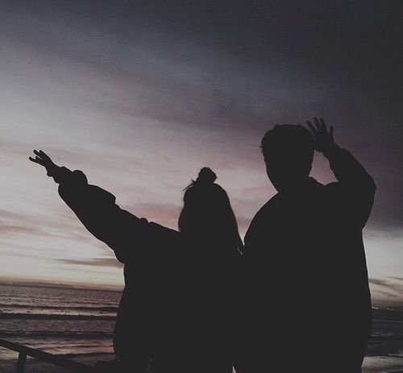
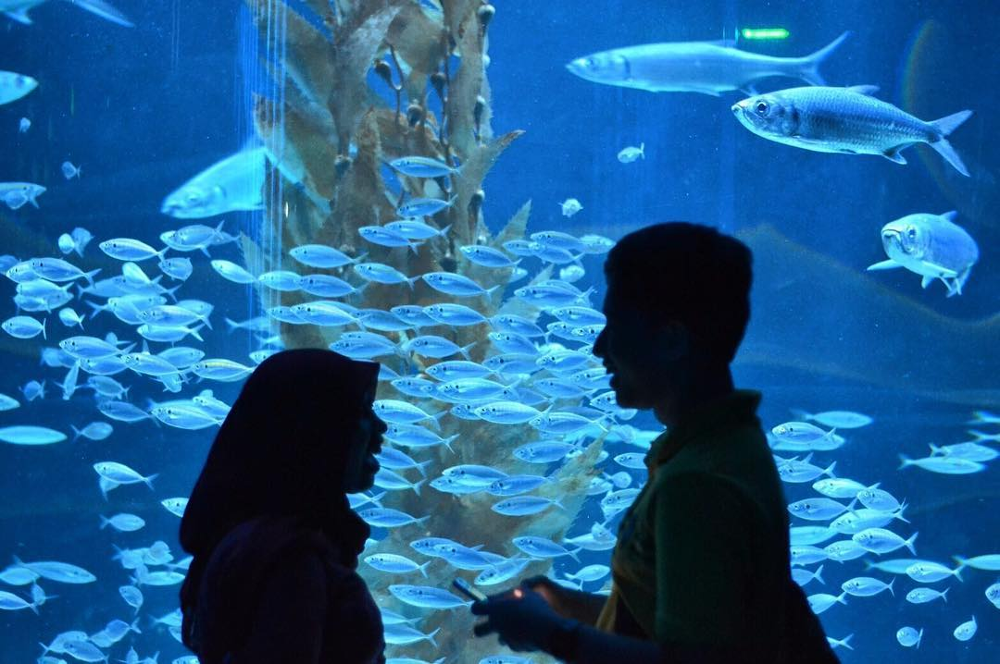
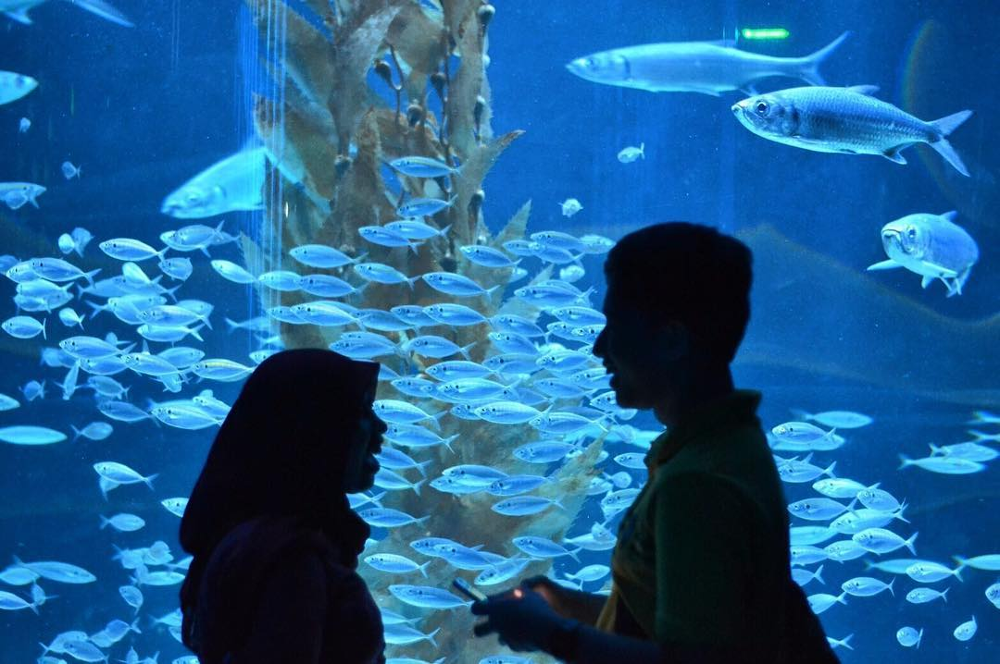
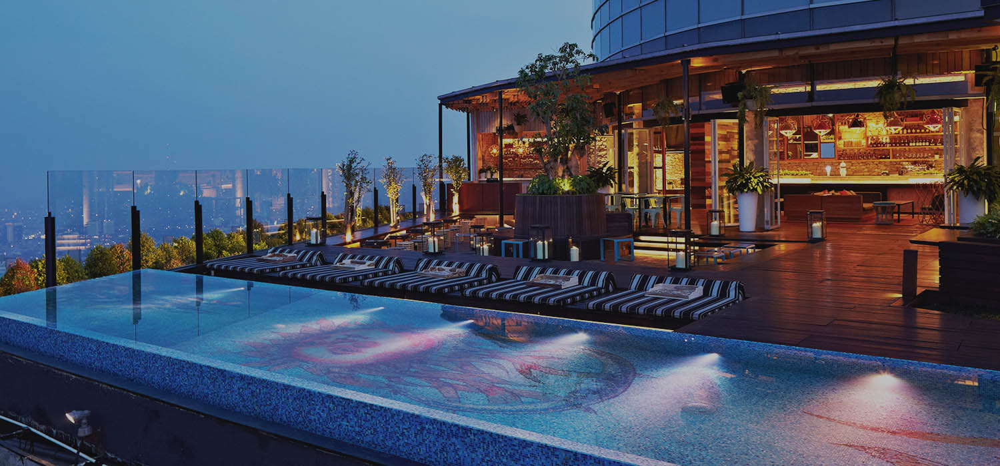
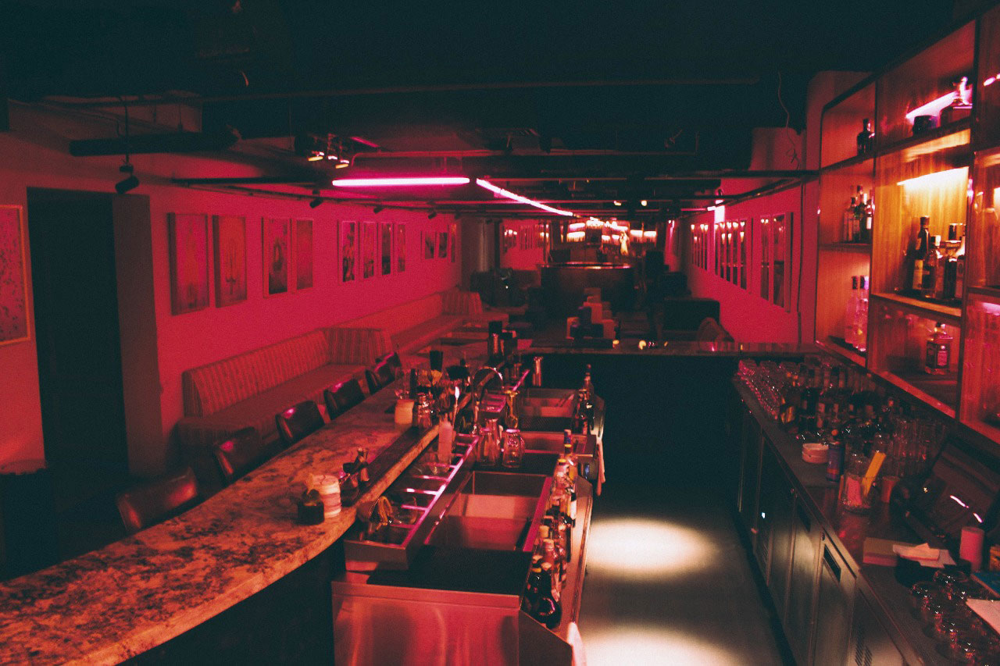
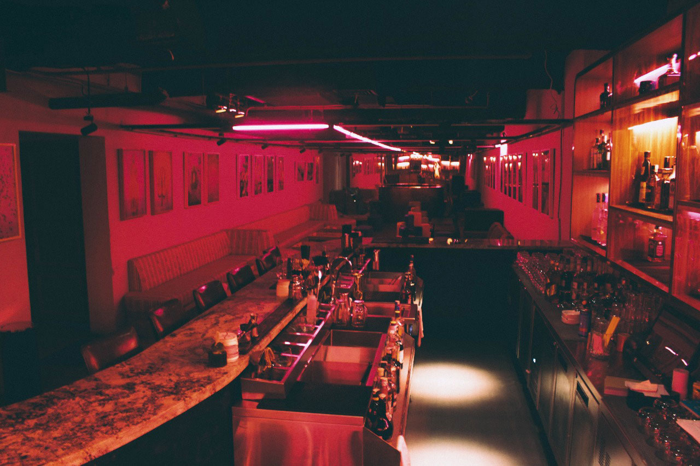

Tempat Yang Cocok Untuk Berpacaran lol
Berikut ini adalah contoh tempat tempat yang cocok untuk dikunjungi para couples yang mau mencoba sesuatu yang berbeda. Mungkin untuk merayakan hari spesial antau baru gajian. Mohon disimak!
Berikut ini adalah contoh tempat tempat yang cocok untuk dikunjungi para couples yang mau mencoba sesuatu yang berbeda. Mungkin untuk merayakan hari spesial antau baru gajian. Mohon disimak!
Jakarta Aquarium merupakan destinasi wisata terkini yang menghadirkan sarana edukasi sekaligus rekreasi. Tidak hanya rumah bagi lebih dari 600 jenis satwa, kami juga menghadirkan pertunjukan Pearl of The South Sea yang seru dan hidangan laut yang lezat di restoran Pingoo!
Tempat ini sangat cocok untuk para couple yang bosen muter muter mall aja, so aquarium ini hal yang berbeda dan tak mainstream.
 


Terletak di pusat kota Jakarta, di lantai paling tinggi yaitu lantai 56 gedung BCA Tower – Grand Indonesia, Thamrin, SKYE bisa di bilang restoran yang sangat menonjol dan paling impresif dari pada yang lainnya. Maka SKYE adalah salah satu tempat makan malam terromantis di Jakarta! Haarus di ingatkan bahwa venue ini memilliki dress code, jadi pendatang disarankan untuk memakai pakaian yang berkelas untuk mengesankan pasangan mreka. Reserfasi meja itu kewajiban untuk para pendatang yag ingin makan malam di venue ini.
Restoran berkelas ini cocok untuk para couples yang bosen makan di foodcourt aja, jadi sekali kali makan mahal dikit tidak apa apa lah.
Dengan nada di lingkungan Kemang, pusat konsep 'Bloom ’All Day Dining, restoran, dan bar dengan suasana yang indah: luas dan bersemangat yang tidak terlalu formal, nuansa lagu yang bagus diputar di latar belakang sepanjang hari.
Di sisi lain ruang duduk konter kopi hipster pusat, menawarkan kopi panggang yang berkualitas tinggi. Di seberang bar lengkap dengan program anggur yang luas adalah tempat duduk bergaya sofa di sepanjang jendela - cukup tepat untuk anggur dan koktail dengan camilan ringan. Dan terletak di seberang adalah ruang makan utama restoran di restoran modern yang terasa dan dapur semi terbuka yang menyajikan makanan kenyaman yang diolah dan diproduksi dengan catatan halus pada kombinasi lezat-sehat serta rasa international membuat HotelMonopoli menjadi tempat ngopi klasik.
 
